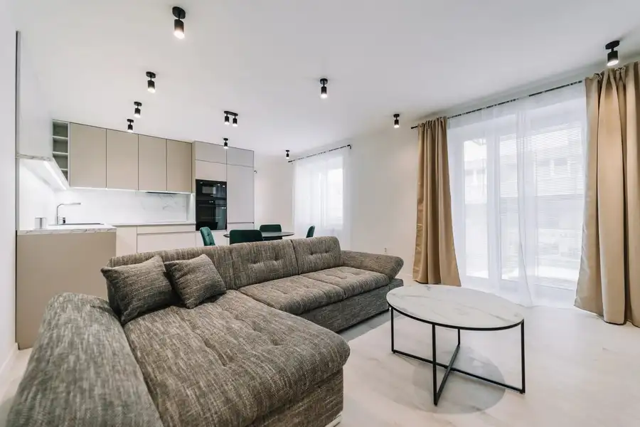
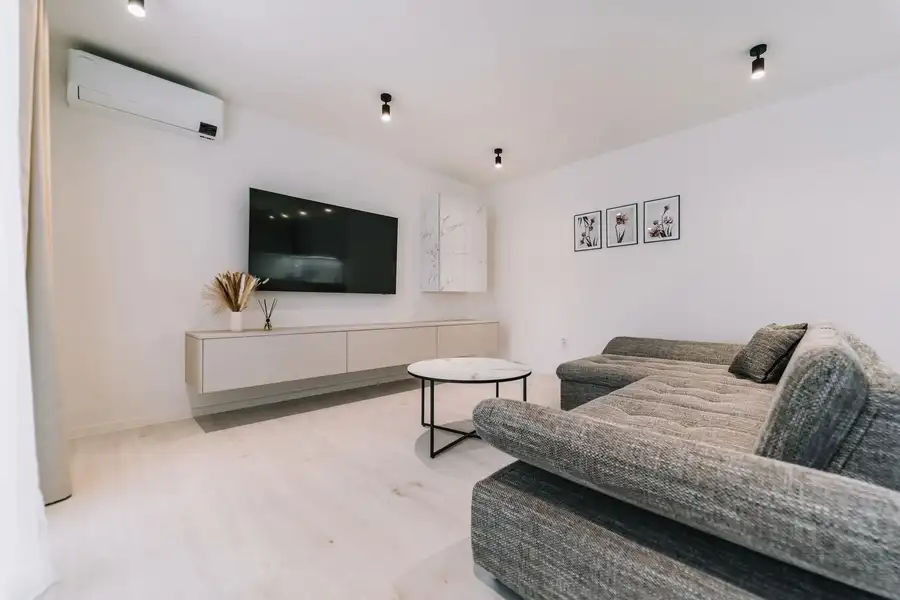
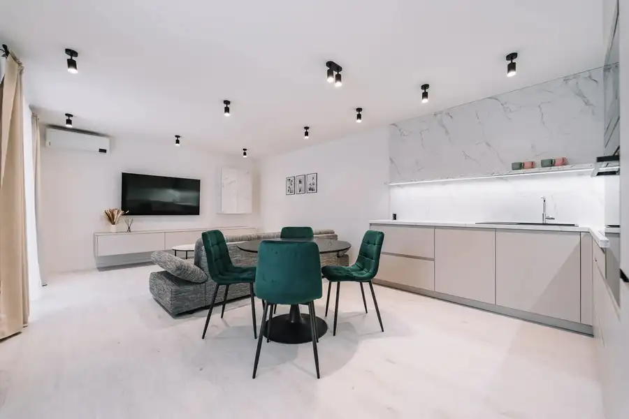
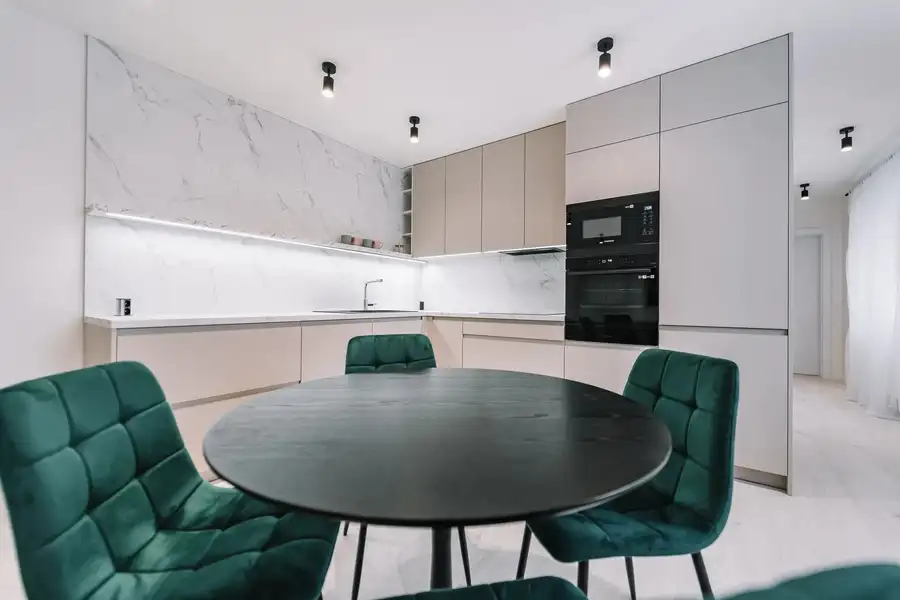
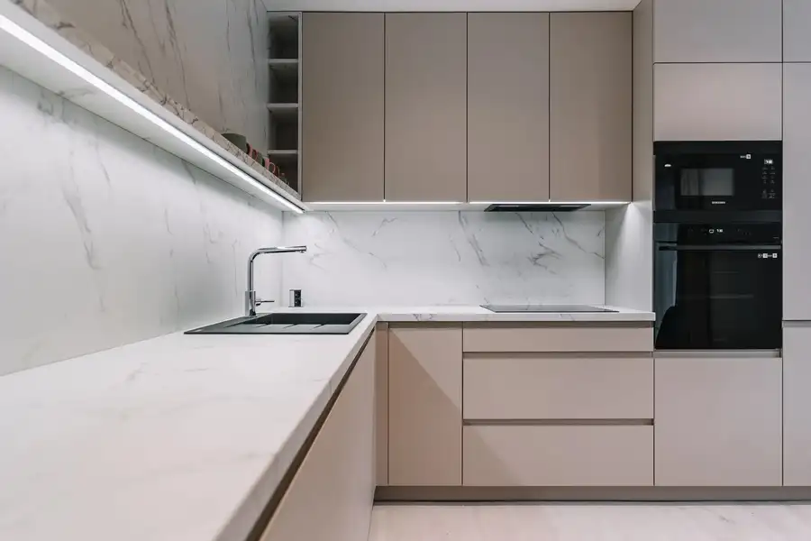
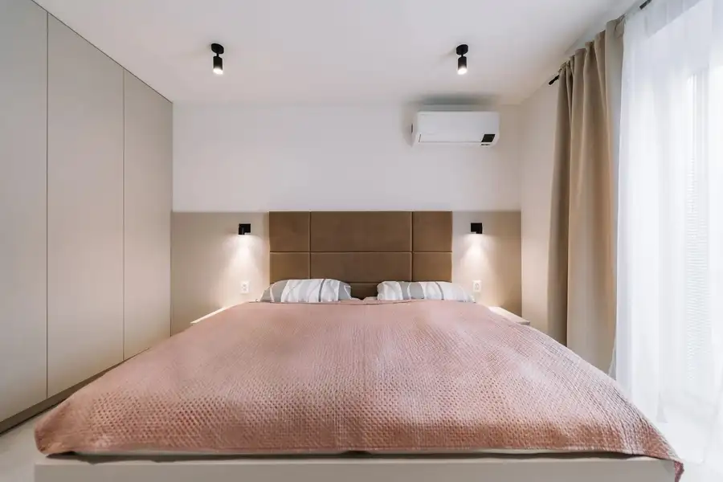
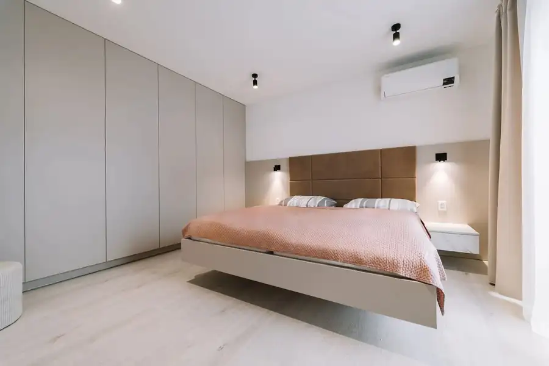

MDG | 2-izbový byt v rezidencii Le Lys d’or, ul. Šoltésovej
Juh, Košice







- Dispozícia2-izbový
- Plocha60.19 m²
- Poschodie1. z 1
- StavNovostavba
- VlastníctvoOsobné
O nehnuteľnosti
Realitná kancelária MDG Reality ponúka na predaj exkluzívny 2-izbový byt v prestížnej novostavbe Le Lys d'Or na Šoltésovej ulici v mestskej časti Košice – Juh. Byt je zariadený vo vysokom štandarde s dôrazom na moderný dizajn, inteligentné technológie a maximálny komfort bývania. Vďaka výbornej lokalite v pešej dostupnosti centra mesta predstavuje ideálnu voľbu na vlastné bývanie aj ako investíciu na prenájom.BYTTyp: 2-izbový bytVýmera: 60,19 m²Poschodie: 1/4Výťah: ÁnoMesačné náklady: 160 €VÝHODY- moderná novostavba Le Lys d'Or- kompletne zariadený byt pripravený na okamžité bývanie- inteligentná SMART domácnosť- klimatizácia- inteligentné osvetlenie Philips Hue- LED pásy Philips Hue- vstavané spotrebiče Samsung- balkón- bezpečnostné dvere- kontrolovaný vstup do bytového domu na čip- kamerový systém- možnosť dokúpenia parkovacieho státia- možnosť dokúpenia pivničnej kobky- pešia dostupnosť centra mestaDISPOZÍCIAByt pozostáva zo vstupnej haly s veľkou vstavanou skriňou a zrkadlom. Dennú časť tvorí priestranná obývacia izba prepojená s modernou kuchyňou vybavenou vstavanými spotrebičmi, z ktorej je priamy výstup na balkón. Samostatná spálňa disponuje veľkou vstavanou skriňou poskytujúcou dostatok úložného priestoru. Kúpeľňa je vybavená sprchovým kútom so špičkovým sprchovým systémom HansGrohe, inteligentnou práčkou so sušičkou, toaletou, rebríkovým radiátorom a elegantným podsvieteným zrkadlom.Byt je vybavený systémom SMART domácnosti, ktorý umožňuje intuitívne ovládanie osvetlenia aj spotrebičov prostredníctvom mobilnej aplikácie, hlasových povelov alebo manuálne. Moderné technológie zabezpečujú vysoký komfort bývania a zároveň prispievajú k efektívnemu využívaniu domácnosti.BYTOVÝ DOMRezidencia Le Lys d'Or predstavuje moderný bytový dom s dôrazom na bezpečnosť a komfort obyvateľov. Vstup do objektu je zabezpečený čipovým systémom a kamerovým monitoringom. Súčasťou projektu je výťah, upravené spoločné priestory a pokojné rezidenčné prostredie.LOKALITARezidencia Le Lys d'Or sa nachádza na Šoltésovej ulici v jednej z najvyhľadávanejších častí Košíc – Juh. Lokalita ponúka ideálne spojenie pokojného mestského bývania s výbornou dostupnosťou do historického centra mesta, ktoré je vzdialené len niekoľko minút pešou chôdzou.V bezprostrednom okolí sa nachádza kompletná občianska vybavenosť vrátane obchodov, supermarketov, škôl, škôlok, zdravotníckych zariadení, reštaurácií, kaviarní, športovísk a zastávok MHD. Výborné dopravné napojenie umožňuje rýchly prístup do všetkých mestských častí aj na hlavné dopravné ťahy. Táto lokalita je ideálnou voľbou pre každého, kto hľadá komfortné mestské bývanie v pokojnom rezidenčnom prostredí s kompletnou infraštruktúrou.CENACena bytu: 269.900 €Možnosť dokúpenia vonkajšieho parkovacieho státia: 20.000 €Možnosť dokúpenia pivničnej kobky: 5.000 €V prípade záujmu nás neváhajte kontaktovať, radi pre Vás zorganizujeme obhliadku.Pavol Jurček, konateľ+421 918 129 466jurcek@mdgreality.skText, 3D obhliadka a fotografie sú autorským dielom a majetkom realitnej kancelárie MDG Reality.
Parametre
- Cena vrátane energií
- Nie
- Druh
- 2 izbový byt
- Dátum zverejnenia
- 31. 08. 2026
- Energetický certifikát budovy
- nie je
- Podlažie
- 1
- Počet izieb / miestností
- 2
- Počet nadzemných podlaží
- 1
- Rok výstavby
- 2022
- Stav nehnuteľnosti
- Novostavba
- Typ
- Predaj
- Typ konštrukcie
- Tehlová
- Umiestnenie
- Ďalšie nadzemné podlažie
- Vlastníctvo
- Osobné
- Vybavenie
- Balkón, Pivnica, Vonkajšie parkovacie miesto
- Vykurovanie
- Klimatizacia
- Úžitková plocha
- 60.19 m²
Kde to je


Mohlo by Vás zaujímať
 BytNové
268 000 €MDG | Na predaj 3-izb. byt na Jedľovej ul., BA II
Vrakuňa, Bratislava
3-izbový75 m²6. podlažie
BytNové
268 000 €MDG | Na predaj 3-izb. byt na Jedľovej ul., BA II
Vrakuňa, Bratislava
3-izbový75 m²6. podlažie
 BytNové
255 000 €MDG | TOP PONUKA: 3-izb. byt na Beniakovej ul., BA IV
Karlova Ves, Bratislava
3-izbový66 m²12. podlažie
BytNové
255 000 €MDG | TOP PONUKA: 3-izb. byt na Beniakovej ul., BA IV
Karlova Ves, Bratislava
3-izbový66 m²12. podlažie
 BytNové
385 000 €MDG | Na predaj luxusný 3-izb. byt, RÍNOK - RAČA, BA III
Rača, Bratislava
3-izbový76 m²6. podlažie
BytNové
385 000 €MDG | Na predaj luxusný 3-izb. byt, RÍNOK - RAČA, BA III
Rača, Bratislava
3-izbový76 m²6. podlažie